Regression comparison
Download resultsAggregation weights
Coefficients can be negative and need not sum to one. Intervals describe coefficient uncertainty; the dashed reference is DE’s fixed 1/H weight.
BDKN
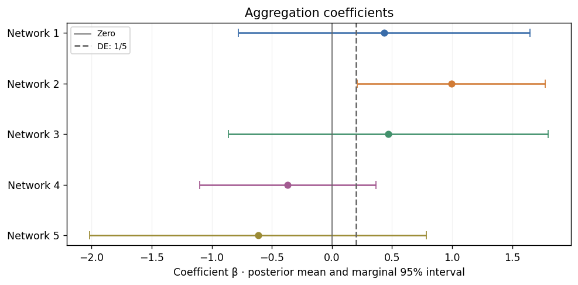
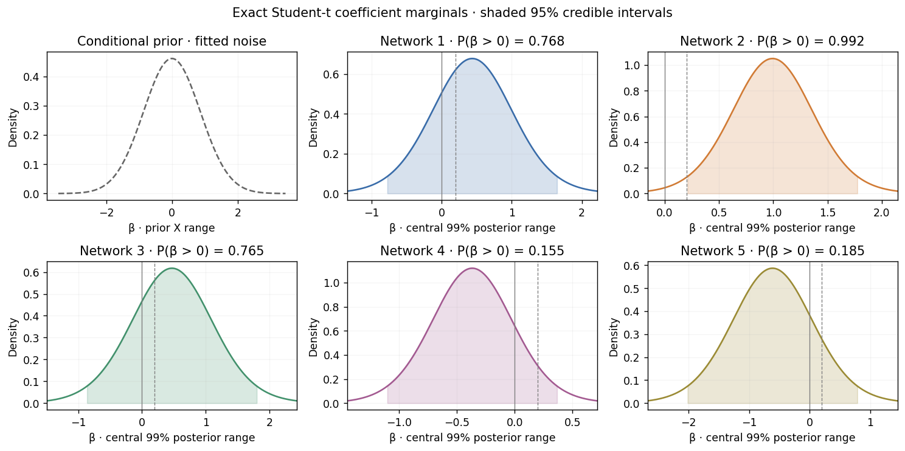

Each density panel uses its own X range for readability; coefficient intervals above share a common axis. Prior reference conditions on fitted noise. Contribution shares use held-out inputs; test targets are used only for scoring.
| Network | β mean | 95% low | 95% high | P(β > 0) | Contribution share | Test RMSE | Test NLL |
|---|---|---|---|---|---|---|---|
| 1 | 0.43469 | -0.77729 | 1.64666 | 0.76846 | 0.16844 | 5.02000 | 1231149.62174 |
| 2 | 0.99304 | 0.21113 | 1.77496 | 0.99230 | 0.36008 | 4.77033 | 656706.74738 |
| 3 | 0.46964 | -0.86109 | 1.80038 | 0.76492 | 0.16942 | 4.81931 | 290912.11794 |
| 4 | -0.36685 | -1.10042 | 0.36672 | 0.15466 | 0.06824 | 3.27546 | 19.29033 |
| 5 | -0.61485 | -2.01420 | 0.78449 | 0.18515 | 0.23383 | 5.00970 | 18.78189 |
Functional repulsion · BDKN
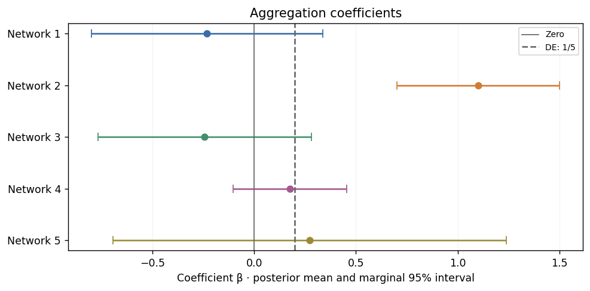
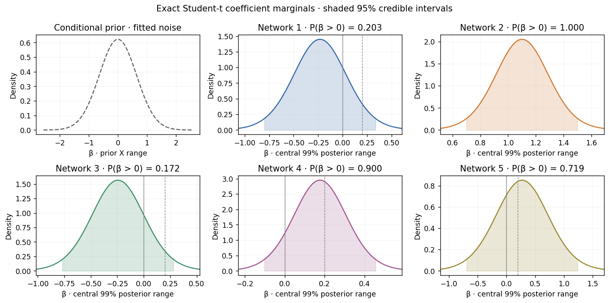
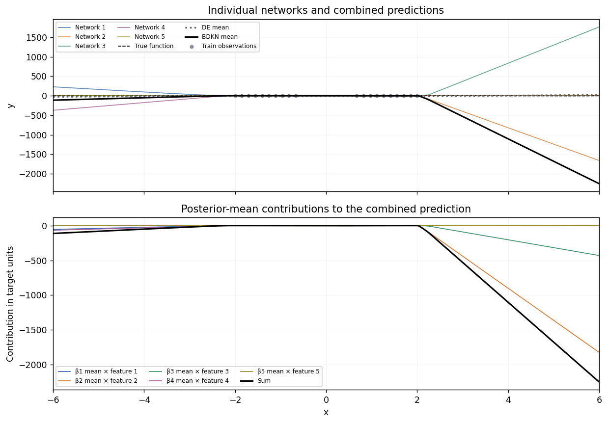
Each density panel uses its own X range for readability; coefficient intervals above share a common axis. Prior reference conditions on fitted noise. Contribution shares use held-out inputs; test targets are used only for scoring.
| Network | β mean | 95% low | 95% high | P(β > 0) | Contribution share | Test RMSE | Test NLL |
|---|---|---|---|---|---|---|---|
| 1 | -0.23096 | -0.79780 | 0.33588 | 0.20271 | 0.01792 | 69.99744 | 20.28255 |
| 2 | 1.10055 | 0.70050 | 1.50061 | 0.99999 | 0.78068 | 563.78598 | 10172.48643 |
| 3 | -0.24337 | -0.76770 | 0.28096 | 0.17225 | 0.17628 | 590.42340 | 382.28632 |
| 4 | 0.17685 | -0.10175 | 0.45544 | 0.89980 | 0.02362 | 113.12267 | 31.66884 |
| 5 | 0.27301 | -0.69211 | 1.23813 | 0.71913 | 0.00150 | 4.66128 | 3254.75419 |
Weight repulsion · BDKN
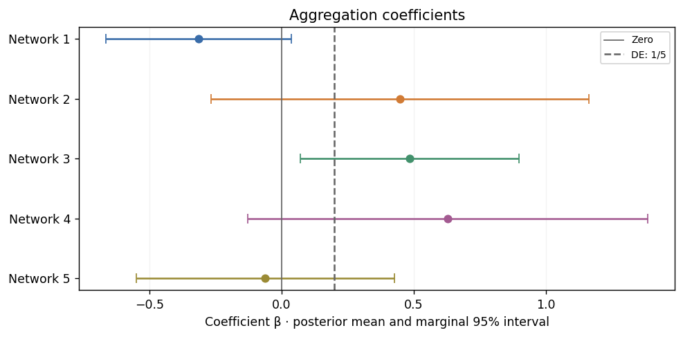
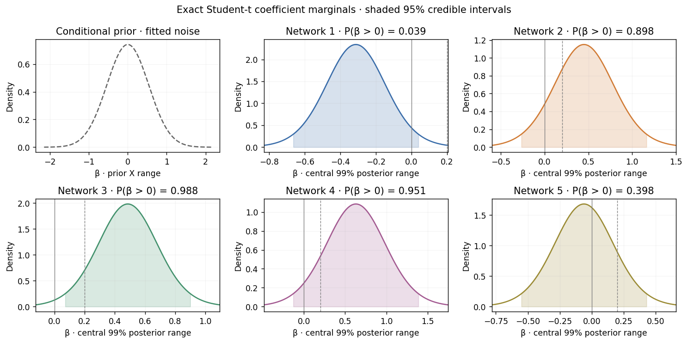
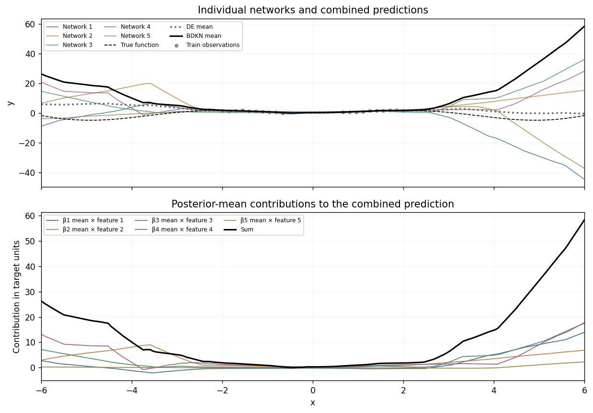
Each density panel uses its own X range for readability; coefficient intervals above share a common axis. Prior reference conditions on fitted noise. Contribution shares use held-out inputs; test targets are used only for scoring.
| Network | β mean | 95% low | 95% high | P(β > 0) | Contribution share | Test RMSE | Test NLL |
|---|---|---|---|---|---|---|---|
| 1 | -0.31273 | -0.66375 | 0.03830 | 0.03895 | 0.19553 | 11.59217 | 31425606.67859 |
| 2 | 0.44883 | -0.26557 | 1.16323 | 0.89757 | 0.25388 | 11.05100 | 81817.46719 |
| 3 | 0.48594 | 0.07171 | 0.90017 | 0.98812 | 0.24645 | 12.47980 | 3.43912 |
| 4 | 0.62995 | -0.12719 | 1.38710 | 0.95099 | 0.28194 | 10.69614 | 109.28925 |
| 5 | -0.06132 | -0.54953 | 0.42688 | 0.39800 | 0.02219 | 7.62166 | 244.29247 |
First-order repulsion · BDKN
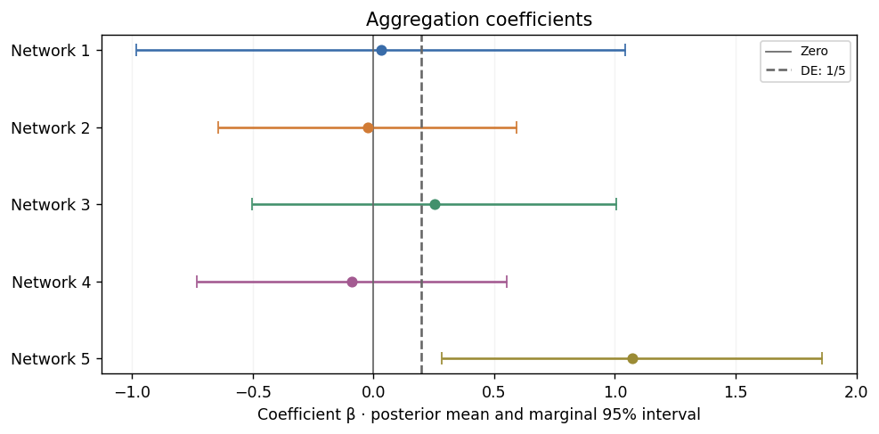
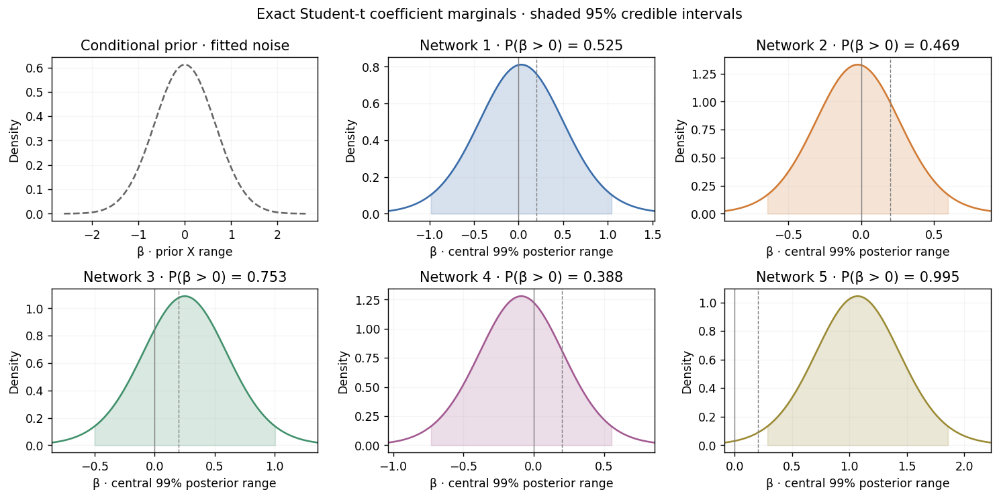
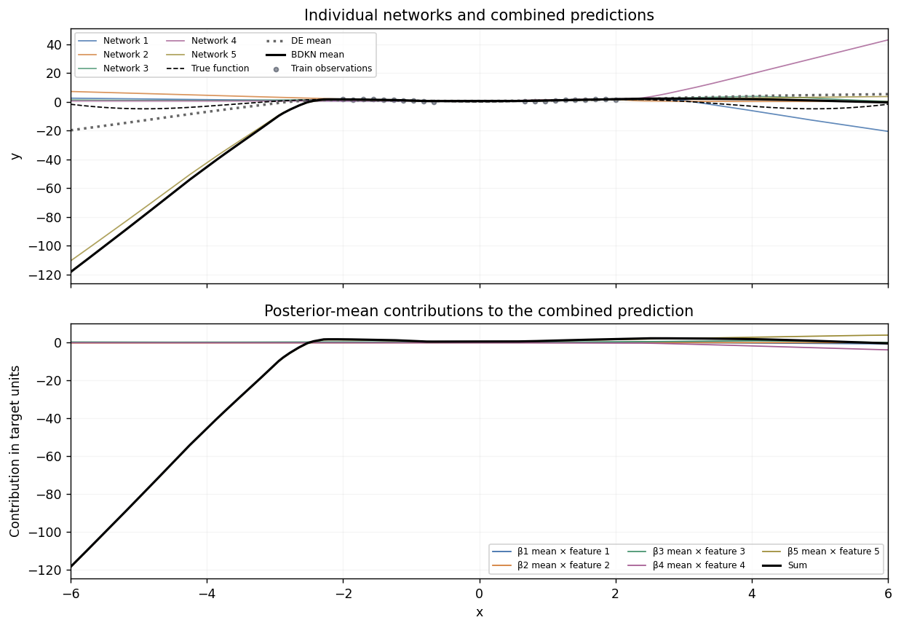
Each density panel uses its own X range for readability; coefficient intervals above share a common axis. Prior reference conditions on fitted noise. Contribution shares use held-out inputs; test targets are used only for scoring.
| Network | β mean | 95% low | 95% high | P(β > 0) | Contribution share | Test RMSE | Test NLL |
|---|---|---|---|---|---|---|---|
| 1 | 0.03046 | -0.98233 | 1.04325 | 0.52470 | 0.00605 | 5.01222 | 64.88686 |
| 2 | -0.02325 | -0.64074 | 0.59425 | 0.46909 | 0.00258 | 4.60909 | 546.80237 |
| 3 | 0.25174 | -0.50313 | 1.00660 | 0.75267 | 0.02338 | 3.82855 | 114.79644 |
| 4 | -0.08839 | -0.73064 | 0.55386 | 0.38850 | 0.03869 | 15.92560 | 270.62399 |
| 5 | 1.07178 | 0.28460 | 1.85897 | 0.99494 | 0.92929 | 30.48230 | 40.42313 |